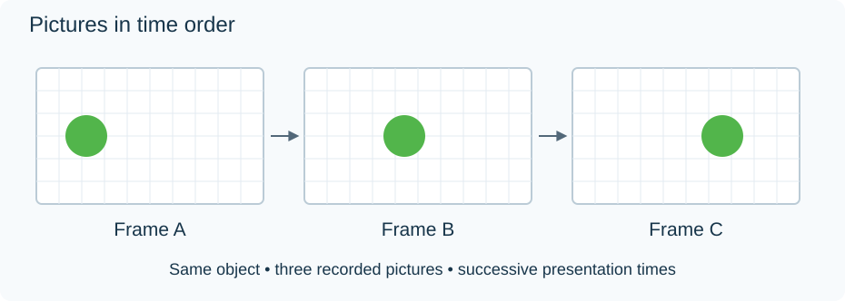

How Digital Video Represents Moving Pictures
Digital video describes a sequence of pictures and the timing needed to display them as motion.
Pause a video and the moving scene becomes one picture. Advance by one frame and the objects have moved a little; advance again and they move farther. Digital video represents those successive pictures and tells the player when each should appear.

Original schematic of three pictures in time order. The drawing simplifies the sample grid.
A picture is a grid of values
A 1920 × 1080 frame has 1,920 positions across each of 1,080 rows. At each position the picture representation supplies information about brightness and color. The values are numbers, so the decoder and display processing can work on them: reconstructing a compressed picture, enlarging it, applying a display transformation, and eventually making the screen emit light.
Different sample formats arrange that information differently. A simple RGB example stores red, green, and blue values at every position. Common video formats instead separate brightness-related information from color-difference information. These are ways of describing a picture; the recognizable scene appears when those values are interpreted together.
Resolution counts the positions in the main picture grid. It does not describe how many different moments the recording contains.
Timing makes the pictures move
Suppose a clip contains 24 frames for each second. The starts of its first three frames are:
| Frame | Presentation time | Time until the next frame |
|---|---|---|
| A | 0 ms | 41.667 ms |
| B | 41.667 ms | 41.667 ms |
| C | 83.333 ms | 41.667 ms |
An exact 24 fps timeline, with times rounded for display.
The player shows A, keeps it on screen until B is due, then replaces it with B. A screen that refreshes more often may show the same video picture several times. That is still one recorded moment, rather than several new frames from the camera.
Now imagine that a ball moves 20 picture positions between A and B. Those positions describe how far it moved; the 41.667 ms interval describes how quickly it moved. Keeping the same pictures but assigning different times changes the apparent speed. Keeping the timeline but reducing picture dimensions changes the spatial representation instead. This is why frame rate and resolution describe different parts of a recording.
Audio has its own samples and timestamps. Both streams are scheduled on a shared playback timeline so a visible action and its sound occur together.
Why the file usually contains compressed instructions
Storing every sample independently would be expensive. For a deliberately simple 8-bit RGB example:
- One frame: 1920 × 1080 × 3 bytes = 6,220,800 bytes.
- At 24 frames/s: 149,299,200 bytes/s, about 149.3 MB/s.
This is raw picture data only, with no audio or packaging. A compressed movie is usually far smaller because it describes patterns efficiently instead of storing that complete raw array for every moment.
A video decoder turns those coded instructions back into picture values. For a region that resembles an earlier picture, the instructions can describe a prediction and the changes needed to correct it. The decoder may therefore need earlier reconstructed pictures before it can build the next one.
From a file to the screen
The container reader first finds the selected video track and its coded data. The decoder uses the track's codec information to reconstruct pictures. Presentation timestamps then place those pictures in time order for the player. Finally, display processing fits and converts them for the screen.
These stages explain familiar observations in an Emby session. A picture can be decoded correctly but shown with the wrong shape if aspect information is mishandled. Motion can be irregular if presentation timing is wrong. During video transcoding, the server reconstructs the source and creates a new coded representation, while the receiving app still performs the final decoding and presentation.
The picture grid describes where the scene is sampled, the timeline describes when, and the coded representation tells the decoder how to build the pictures.